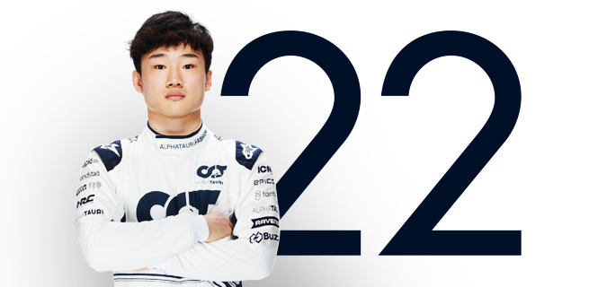
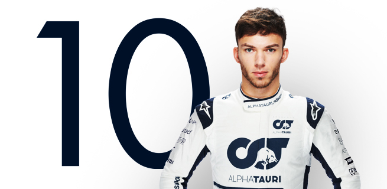
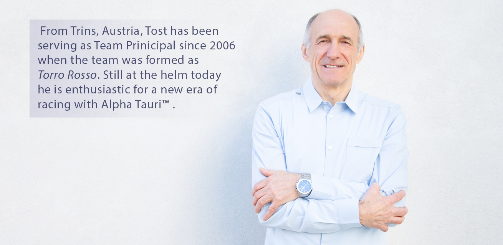
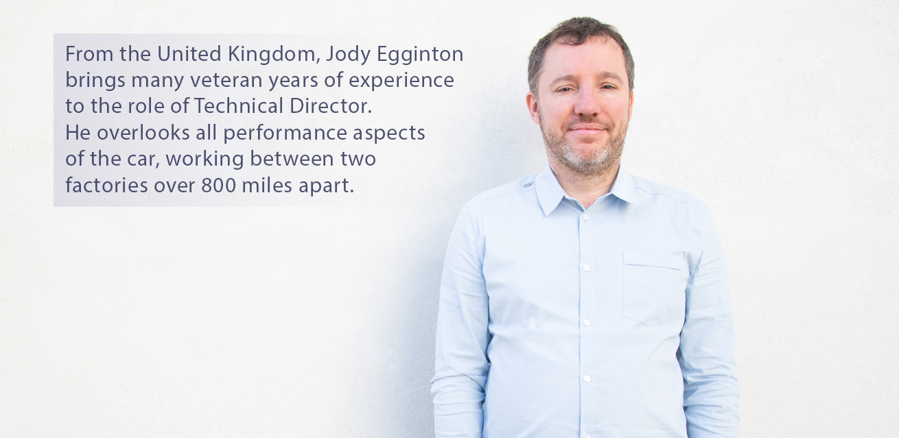
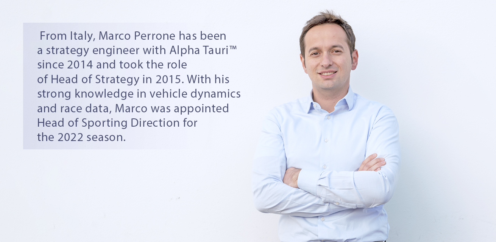

YUKI TSUNODA

Scuderia AlphaTauri’s Japanese driver was born on 11 May 2000 in Kanagawa and, at 20 years of age is the youngest driver on the Formula 1 grid in 2021. The youngster will be the 18th Japanese driver to compete in Formula 1, the first since Kamui Kobayashi last raced in 2014. In 2021 Yuki Tsunoda makes his Formula 1 debut as our official driver alongside Pierre Gasly. He first tried a Formula 1 car in November 2020 at the Enzo e Dino Ferrari circuit in Imola, a few days after the Emilia Romagna Grand Prix. At the wheel of one of our 2018 cars, Yuki was soon lapping consistently and proved he could adapt to what was a completely new type of car for him. On 15 December, a couple of days after the 2020 F1 season finale in Abu Dhabi, Yuki once again showed what he could do at the wheel of the AT01, our first AlphaTauri™ era car, during the Young Driver Test at the Yas Marina Circuit. Yuki has been confirmed as our official driver for the 2022 and 2023 F1 seasons as well. From scuderia.alphatauri.com
PIERRE GASLY

Pierre Gasly, Scuderia AlphaTauri’s French driver, had been knocking on the door of Formula 1 ever since winning the 2016 GP2 series in dramatic fashion, taking the title at the final round in Abu Dhabi. Actually, you could say he started knocking at the age of 2, when he first used to go to kart tracks to watch his elder brothers.Pierre stayed with us for 2021, securing another third place podium finish in Baku. He also started on the front row for the first time ever, when he qualified second in Qatar. Pierre Gasly races for Scuderia AlphaTauri™ again in 2022. From scuderia.alphatauri.com
TEAM MANAGERS
FRANZ TOST, Team Principal

JODY EDDINGTON, Technical Director

MARCO PERRONE, Head of Sporting Direction
